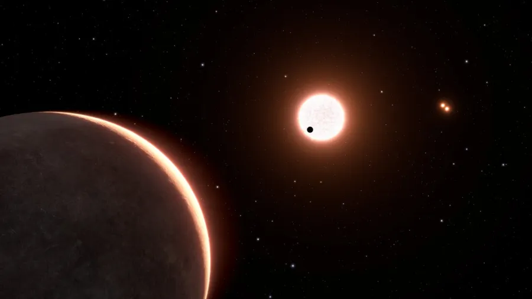

16. November 2023
LTT 1445 Ac: Hubble vermisst den nächsten erdgroßen Transitplaneten
Das Hubble-Weltraumteleskop hat die Größe von LTT 1445 Ac bestimmt, dem nächstgelegenen bekannten erdgroßen Planeten, der vor seinem Stern vorbeizieht. Der Planet hat das 1,07-Fache des Erddurchmessers. Zuvor war unklar, ob er die Sternscheibe nur streift; dann wäre seine Größe unterschätzt worden.
LTT 1445 Ac ist demnach ein Gesteinsplanet mit ungefähr erdgleicher Schwerkraft an der Oberfläche. Mit rund 260 Grad Celsius ist er aber zu heiß für Leben, wie wir es kennen. Er umkreist einen Roten Zwerg in einem Dreifachsternsystem, das 22 Lichtjahre entfernt im Sternbild Eridanus liegt.
Quelle: ESA/Hubble: "Hubble measures the size of the nearest transiting Earth-sized planet." (heic2311), 16.11.2023